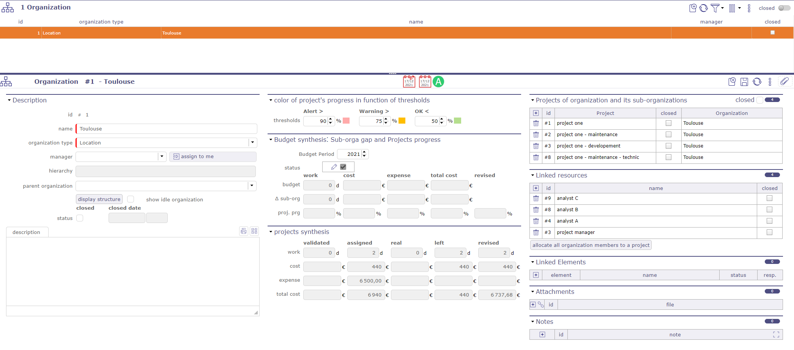
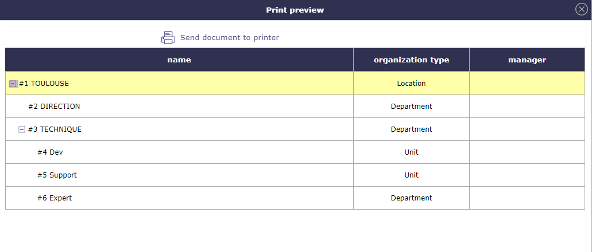
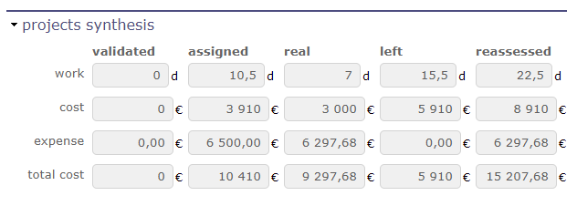
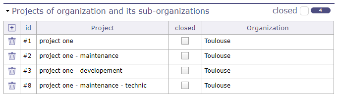

Organisations¶
Gestion des organisations
La gestion des organisations permet de modifier la structure de l’entreprise dans le cadre des organisations (Départements, Unités, Emplacements, …)
L’organisation résume les données des projets en cours pour l’organisation.
Selon le profil, vous pouvez limiter la visibilité des ressources aux personnes de la même organisation ou équipe que l’utilisateur actuel.

Vue globale des organisations¶
Section Description
Champ |
Description |
|---|---|
Identifiant unique pour l’organisation. |
|
|
Nom abrégé de l’organisation. |
|
Type d’organisation. |
Manager |
Manager de l’organisation. |
Hiérarchie |
liste des organisations parentes. |
Organisation parente |
organisation parente. |
Afficher la structure |
Affiche la structure de l’organisation sélectionnée dans une fenêtre contextuelle. |
Afficher les organisations inactives |
Afficher les organisations closes dans l’affichage de la structure. |
Clos |
Case cochée indique que l’organisation est archivée. |
Dates de fermeture |
Affiche la date et l’heure de fermeture de l’organisation. |
Description |
Description de l’organisation |

Afficher la structure
Cliquez sur le bouton pour ouvrir une fenêtre contextuelle qui affichera de manière plus graphique la structure de l’organisation que vous avez sélectionnée.

Affichage de la structure¶
Synthèse du projet

Synthèse financière du projet¶
Cette section affiche un résumé des coûts enregistrés sur les projets liés à l’organisation sélectionnée.
Projets de l’organisation et de ses sous-organisations

liste des projets et de ses sous-projets¶
Dans cette section, vous trouverez la liste des projets et sous-projets liés à l’organisation sélectionnée.
Un bouton vous permet d’afficher ou de masquer les organisations closes.
Ressources liées
Cette section vous permet de voir les ressources attachées à l’organisation sélectionnée.
Cliquez sur
 pour ajouter une nouvelle ressource dans l’organisation
pour ajouter une nouvelle ressource dans l’organisationCliquez sur
 pour supprimer une ressource de l’organisation
pour supprimer une ressource de l’organisationCliquez sur le bouton allouer tous les membres de l'organisation à un projet pour affecter toutes les ressources d’une organisation à un projet.
La fenêtre contextuelle d’affectation au projet s’ouvre et vous permet de choisir vos ressources.
Voir : Section Affectations
Éléments liés
Cette section vous permet de lier n’importe quel élément de ProjeQtOr à l’organisation sélectionnée.
Voir : Section Éléments liés
Pièces jointes
Cette section vous permet de joindre des éléments externes à l’organisation sélectionnée. Qu’il s’agisse de documents ou d’adresses URL.
Voir : Section Pièces jointes
Notes
Cette section vous permet d’ajouter des notes sur les éléments liés à l’organisation sélectionnée
Voir : Section Notes